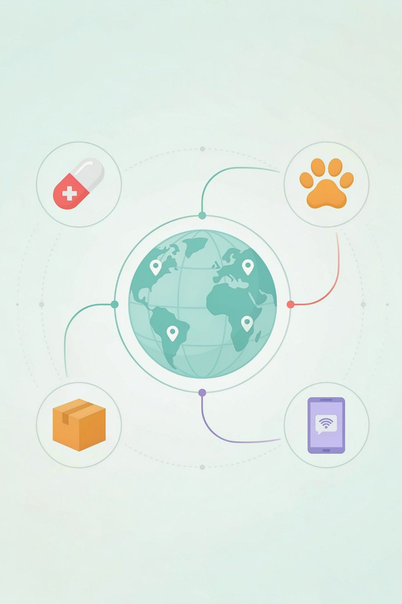
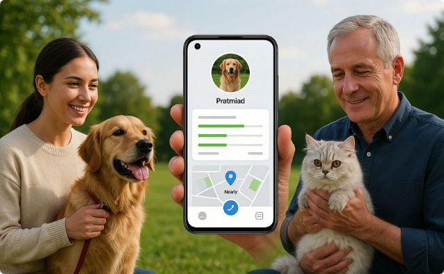
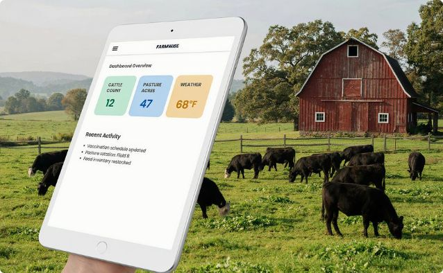
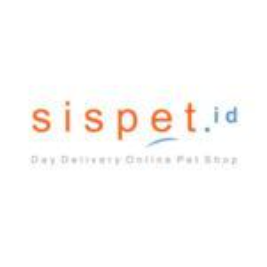
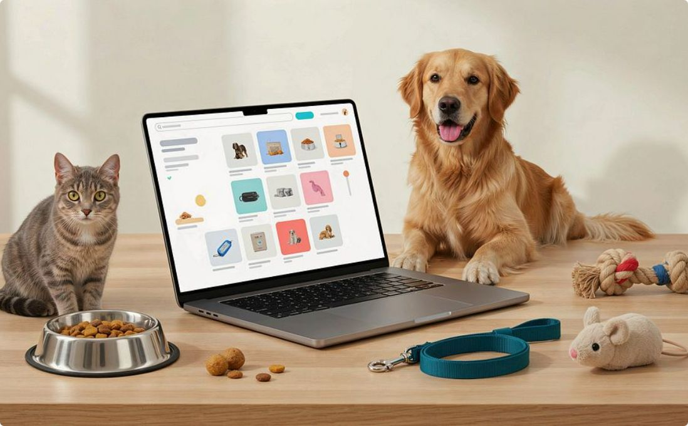
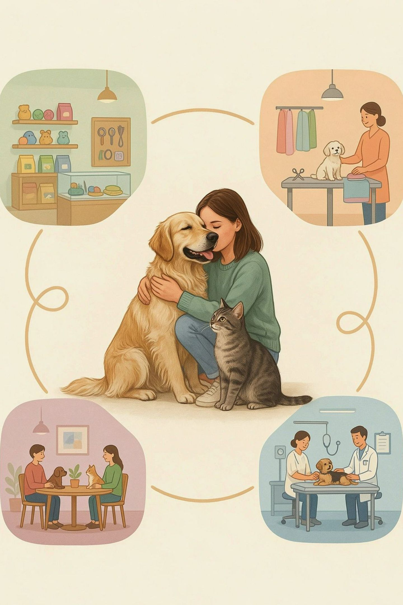
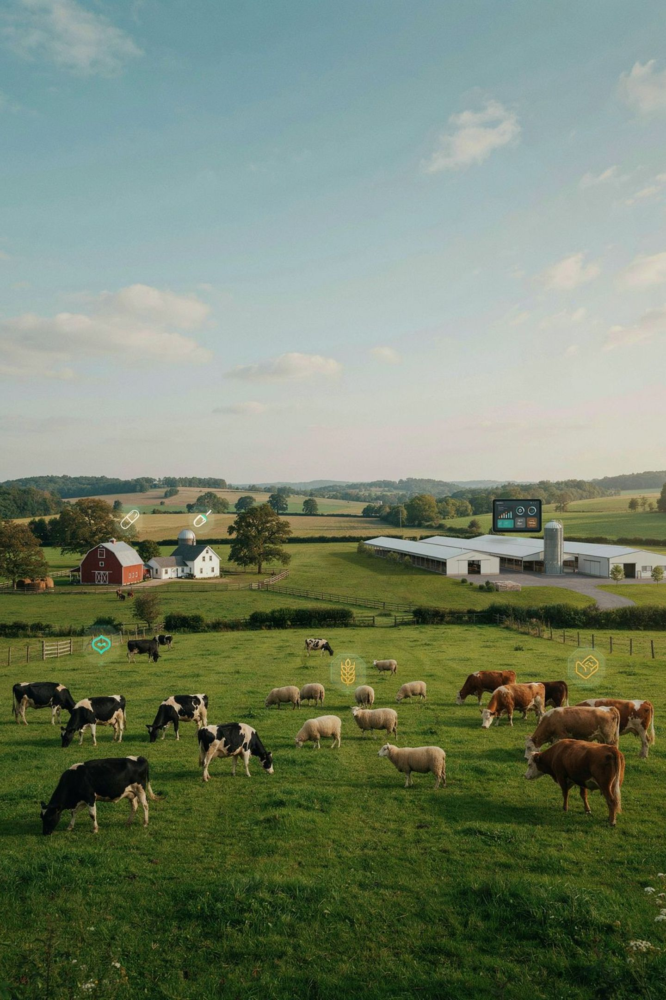
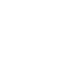

sistar company - sistar intl - pt sistar indonesia

GLOBAL ECOSYSTEM & BASES
PT. SISTAR Indonesia
A connected ecosystem of complementary businesses, delivering healthier, happier, and better lifestyles across America and beyond.
PT. SISTAR Indonesia
Our operations in Indonesia.
Global SISTAR Bases
The infrastructure that supports our worldwide reach.
Complementary Businesses
One ecosystem delivering healthier, happier, and better lifestyles across America and beyond.
Welcome to the Sistar Family
Discover our diverse family of brands, designed to enhance everyday experiences through innovation, quality, and care. From pet care to pharmaceuticals, digital platforms to creative content, we are committed to a healthier, happier world for people and animals alike.
Innovation
Pioneering solutions across biopharmaceuticals, digital platforms, and pet care.
Quality
Exacting standards in every product and service we deliver across all our brand families.
Care
A deep commitment to the well-being of the people, pets, and communities we serve.
Reach
Operations spanning Indonesia, Korea, America, and growing global markets.
OUR BRAND FAMILY
The Sistar Family Group: Innovation Across Industries
The Sistar Family Group brings together a comprehensive ecosystem of complementary businesses, each serving a distinct market with the same commitment to excellence. Our integrated approach lets us apply deep expertise across industries while keeping a specialized focus in every sector.
From biopharmaceuticals to marketplace platforms, our companies work in harmony to deliver products and services that enhance quality of life, support business growth, and create sustainable value for partners and customers across America and beyond.
Three Pillars of Pharmaceutical Excellence
1
Sistar Biopharm
Advanced pharmaceutical solutions focused on preventative healthcare and treatment innovation, bridging human and animal health through the One Health Initiative.
2
SisCart
A streamlined e-commerce platform optimized for specialty products and a seamless customer experience, connecting buyers and sellers across specialized categories.
3
Sispharm
A dedicated pharmaceutical division specializing in human and veterinary medical products, delivering comprehensive health coverage across species.
DIGITAL DIVISION
BiOnDi: Brand-New Online Delights
Smooth like digital. BiOnDi is our innovative digital division, delivering fresh online experiences through IT sourcing, app trading, and digital marketplace development. We connect businesses with the tools they need to thrive.
IT Sourcing
Strategic technology procurement that connects businesses with the right digital tools and resources to optimize operations and drive growth.
App Trading
A specialized marketplace for mobile application acquisition, development, and monetization, creating value for developers and businesses alike.
Digital Platforms
Custom-built online environments that deliver exceptional user experiences through intuitive design and powerful functionality.
MOBILE PET ECOSYSTEM
Petcentric: Pet Care Reimagined
Petcentric, eccentric. We have reimagined the pet care experience with mobile solutions that put comprehensive pet management at your fingertips. Our suite of applications helps pet owners, veterinarians, and pet businesses streamline everything from health tracking to service scheduling.
Our flagship Petcentric app serves everyday pet owners, while Petcentric Pro serves veterinary professionals. Together, they form an interconnected ecosystem that strengthens the bond between pets and their caregivers and simplifies the business of pet care.
The Petcentric App Suite

Petcentric
A consumer app that helps pet owners manage health records, find nearby services, and connect with the wider pet community.
Petcentric Pro
A professional platform that helps veterinarians and pet care businesses manage patients, appointments, and specialized services.

FarmCentric
A specialized application for livestock management that extends our proven technology to agricultural settings and large-scale operations.
S-QUICK CAPABILITIES
S-Quick: Rapid Delivery Solutions
Speed When It Matters. S-Quick is our premium delivery service, built for the on-demand economy. It integrates seamlessly with our other platforms and standalone businesses, moving products from warehouse to doorstep with exceptional efficiency — from pharmaceuticals to pet supplies.
Delivery Infrastructure Built to Go the Distance
Same-Day Delivery
Critical items delivered within hours, not days, across major metropolitan areas nationwide.
Real-Time Tracking
GPS integration provides minute-by-minute updates on your delivery, from dispatch to arrival.
Temperature Control
Specialized vehicles and packaging protect pharmaceuticals, pet supplies, and other temperature-sensitive products.
S-Quick completes our ecosystem by ensuring exceptional products across our brand family reach customers quickly and in perfect condition. It supports both B2C and B2B operations with the reliability modern consumers expect.
CREATIVE MEDIA POWERHOUSE
Studio Butter: Smooth Content Creation
Smooth like butter. Studio Butter is our creative powerhouse, producing engaging digital content that tells compelling stories across platforms. From product showcases to educational content, our talented team creates video, photography, and interactive media that captivates audiences and drives meaningful engagement.
As the creative force behind sisTV and our mall.sisTV channels, Studio Butter helps brands connect with consumers through authentic storytelling and polished production. Our strategy centers on building community while driving conversion through engaging, shareable media.
Watch on YouTube: sisTV.id
Studio Butter Creative Services
Video Production
Professional video, from commercials to tutorials, optimized for each platform and viewing experience.
Live Streaming
Real-time content for product launches, demonstrations, and interactive customer events.
Social Media
Platform-specific content strategies that build community and drive engagement across key channels.
PRODUCT OF IRUKA PETCARE GROUP KOREA
Iruka: Premium Pet Care Specialists
Iruka is our premium line of specialized pet care products and services, bringing Korean pet care innovation to the American market. Its gentle yet effective formulations are designed to support pets through every stage of life, from playful puppyhood to graceful senior years.
Our carefully formulated shampoos, conditioners, and grooming products deliver "Bubble, Caring, Protecting" benefits that maintain coat health while addressing specific skin conditions and breed requirements. Each formulation is developed with veterinary insight and tested to the highest standards of efficacy and safety.
Discover how Iruka can transform your pet care routine at iloveiruka.com.
Professional Development
Through our Grooming School & Groomer Certification programs, we are raising professional standards in the pet care industry and creating meaningful career opportunities for passionate pet lovers. Our certification is recognized by industry associations across the region.

DIGITAL COMMERCE INFRASTRUCTURE
Our Marketplace & Business Platforms
The Sistar Family Group has built an ecosystem of digital marketplaces and business platforms.
Connecting Consumers
Our marketplaces and platforms connect consumers with products and services across multiple specialized categories.
Platforms With Their Own Audiences
Each platform serves its own audience.
Shared Infrastructure
The platforms share technology and logistics infrastructure.
Six Platforms, One Ecosystem

sisPet.id
A comprehensive pet supplies marketplace offering premium products for every type of pet, from everyday essentials to specialty items.
sisMii.id & sisMall.id
Consumer-focused marketplaces featuring curated products across categories, with an emphasis on quality and customer experience.
sisMarket.id & ebizmarket.com
B2B platforms that connect businesses with suppliers, manufacturers, and service providers through streamlined procurement solutions.
Our integrated approach to e-commerce delivers seamless shopping experiences and gives businesses powerful tools to reach targeted customer segments across multiple platforms at once.

HOLISTIC PET ECOSYSTEM
Sistar Pet World: A Complete Pet Ecosystem
Sistar Pet World reflects our holistic approach to pet care, bringing together retail, services, community, and healthcare into one comprehensive ecosystem for pet owners and professionals alike.
Retail
Services
Community
Healthcare
Our goal is to create spaces and experiences that celebrate the human-animal bond and provide everything needed for optimal pet health and happiness.
Pet World: Four Pillars of Excellence
Retail Excellence
A curated selection of premium pet food, supplies, and accessories, available online at sistarpetworld.id and in our physical stores.
Pet Travel
Specialized pet transportation services through pettravelindonesia.com, designed to make every journey safe and comfortable.
Premium Nutrition
High-quality pet nutrition from brands such as iskhan.id, formulated to meet specific dietary needs and preferences.
Professional Network
A community for breeders, veterinarians, and pet professionals through our Members & Breeders Club, offering exclusive benefits.
ONE HEALTH INITIATIVE
Sistar BioPharm: Advancing One Health
Sistar BioPharm embodies our commitment to the One Health Initiative, which recognizes that human, animal, and environmental health are deeply interconnected. Through our pharmaceutical development programs, we are creating innovative solutions that address health challenges across species and ecosystems.
Our research focuses on preventative care, vaccines, and diagnostic technologies that identify and address health concerns before they become serious. By adapting global innovations for regional markets, we ensure that cutting-edge solutions are accessible and aligned with local needs and regulatory frameworks.
BioPharm: Research & Innovation Areas
1
Vaccine Development
Research and production of preventative vaccines for human and animal health, targeting emerging disease threats.
2
Diagnostic Innovations
Advanced diagnostic tools that enable faster, more accurate identification of health concerns for earlier, more effective intervention.
3
Localization Expertise
Adapting global pharmaceutical advances to meet local regulatory requirements and address specific regional health challenges.


Livestock Business Solutions
Through its specialized livestock division, Sistar delivers comprehensive solutions for agricultural operations.
Every Farm Size
Serving everything from small family farms to large commercial enterprises.
Integrated Approach
Pharmaceutical products, nutritional expertise, and digital management tools work together to optimize animal health and productivity.
Sispharm.id Portfolio
A specialized portfolio of livestock medications, supplements, and preventative care products, designed for the distinct needs of different species and production environments. It supports sustainable farming while ensuring optimal animal welfare.
Livestock Solutions Portfolio
1
Preventative Care
Vaccination programs and health monitoring solutions that reduce disease incidence and minimize the need for treatment across herd and flock environments.
2
Nutritional Support
Specialized feed additives and supplements that support growth, reproduction, and overall animal health for a range of production goals.
3
Treatment Solutions
Effective medications and protocols for common livestock health challenges, designed to minimize production disruption and downtime.
4
Management Tools
Digital applications and record-keeping systems that streamline operations and support better decision-making for producers at every scale.
Explore eCatalogue
Professional Associations & ODM Partnerships
Sistar actively supports professional organizations that advance industry standards and best practices.
Supporting Organizations
We actively participate in and support organizations that advance industry standards and best practices.
ipsa.id and Iruka
Through our involvement with associations such as ipsa.id and our own Iruka brand, we are helping to shape the future of the industry.
Shaping the Future
We are helping shape the future of pet care, animal health, and related industries, building a stronger ecosystem for all participants.
Partnership & Collaboration Framework
Industry Associations
Active membership and leadership in professional organizations that set standards, provide education, and advocate for practitioners and industry advancement.
Original Design Manufacturing
Strategic partnerships with manufacturers to develop exclusive products that meet our exacting standards for quality, safety, and performance.
Certification Programs
Development and administration of professional certification programs that raise skill levels and establish recognized credentials across the industry.
This collaborative approach lets us draw on collective expertise while maintaining the innovation that distinguishes the Sistar family of brands in competitive markets.
LOGISTICS INFRASTRUCTURE
Nationwide Distribution Network: Strategic Locations Across America
The Sistar family of brands is supported by a robust distribution network, strategically positioned to deliver efficiently nationwide. Our logistics infrastructure pairs centralized inventory management with regional distribution centers, keeping products available while minimizing delivery times across all business lines.
Distribution by the Numbers
5
Major Distribution Centers
Strategically located across the country to ensure complete nationwide coverage and optimized shipping times.
24hr
Order Processing
Advanced inventory management systems enable rapid order fulfillment for both B2B and B2C customers.
98%
In-Stock Rate
Our commitment to inventory availability ensures products are ready when customers need them most.
1–3
Delivery Days
Fast shipping throughout the continental United States, with expedited options available on request.
Sistar Fair: Connecting Our Community
The Sistar Fair reflects our commitment to building community around our brands and the industries we serve. These signature events bring together consumers, professionals, and partners for product showcases, educational opportunities, and high-value networking in a vibrant, engaging atmosphere that celebrates everything Sistar stands for.
What to Expect at Sistar Fair
Product Showcases
Hands-on demonstrations and exclusive previews of new products across our brand family, with expert guidance and special event pricing for attendees.
Educational Sessions
Workshops, seminars, and certification opportunities led by industry experts, covering current trends and advancing professional knowledge.
Business Connections
Structured networking that connects suppliers, retailers, service providers, and industry professionals for meaningful, lasting collaboration.
Upcoming Sistar Fair Events
GLOBAL PARTNERSHIP
Let's Do Business Together
Whether you're a retailer looking to carry our products, a service provider interested in joining our platform, or a potential partner exploring collaboration, the Sistar Family Group offers multiple pathways to profitable, sustainable business relationships built on shared values and mutual growth.
Partnership Pathways
Retail Partnerships
Become an authorized retailer for our premium brands and enjoy competitive margins, full marketing support, and exclusive access to products you won't find elsewhere.
Platform Integration
Join our digital marketplaces and apps as a vendor or service provider, and reach our established, growing customer base with your offerings.
Distribution Opportunities
Explore regional distribution partnerships that leverage our proven product portfolio and your deep knowledge of the local market.
Professional Development
Take part in our certification programs and educational initiatives to strengthen your professional credentials and elevate your service offerings.
Ready to Join the Sistar Family?
The Sistar Family Group is always looking for forward-thinking partners, retailers, distributors, and collaborators who share our vision for a healthier, happier world. Reach out today to discover how we can grow together across America and the global markets we serve.